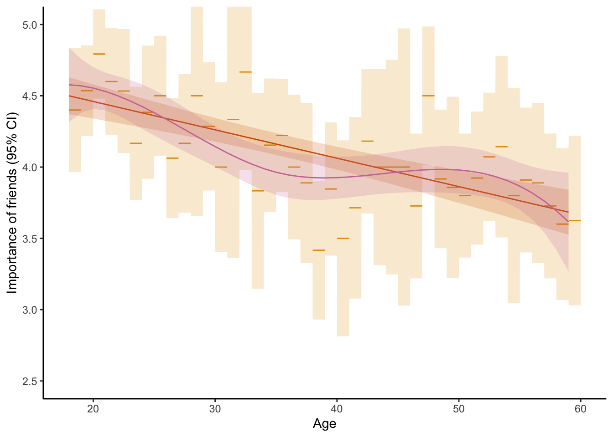
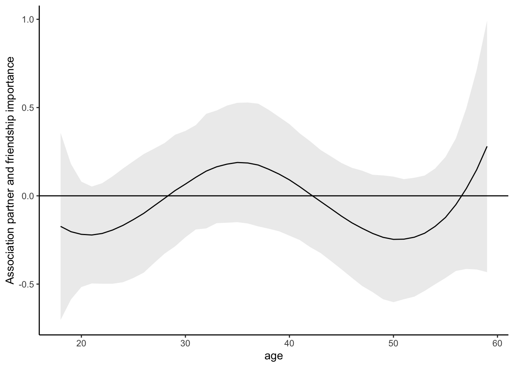
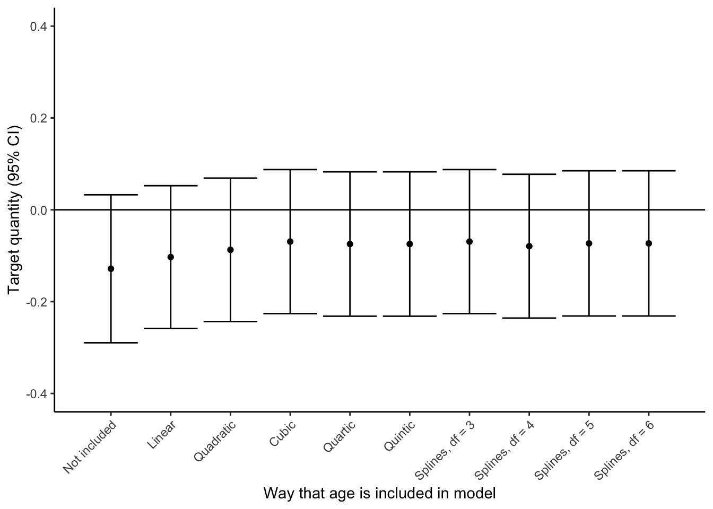

source(here::here("scripts/load.R"))Relationship Status and the Importance of Friends
Before we start, let’s execute a helper script that loads the necessary dependencies.
Overview
This document contains example 2, in which we analyze the association between relationship status and the importance people assign to friends. Data can be retrieved from the OSF but is also included in the downloadable replication package.
It’s a common complaint that people who enter a relationship start to neglect their friends. Here, we are going to use this to motivate an associational research question: Do people in romantic relationships, on average, assign less importance to their friends? To address this question, we analyze data that were collected in the context of a diary study on satisfaction with various aspects of life (Rohrer et al., 2024). In this study, 482 people reported whether they were in a romantic relationship of any kind (partner) and also the extent to which they considered their friendships important (friendship_importance) on a scale from 1 (not important at all) to 5 (very important).
Read and clean the data
# Read the data
dat <- read.csv(here("data/start.csv"))
# Restrict to range that we can model well
dat <- dat[dat$sex != 3, ] # exclude 5 people who reported a gender distinct from male/female
dat <- dat[dat$age < 60, ] # exclude people over the age of 60
# Limit to complete cases
dat <- dat[complete.cases(dat[, c("age", "sex", "partner_any", "IMP_friends_Start")]),]
dat$sex <- as.factor(dat$sex)
# Look at the variables
table(dat$age)
18 19 20 21 22 23 24 25 26 27 28 29 30 31 32 33 34 35 36 37 38 39 40 41 42 43 44 45 46 47 48 49 50 51 52 53 54 55 56 57 58 59
15 28 29 20 15 18 13 16 16 12 4 14 8 3 6 6 13 18 11 9 12 13 6 7 11 6 5 3 11 12 12 7 15 13 14 7 5 11 9 11 10 8 table(dat$sex)
1 2
347 135 table(dat$partner_any)
0 1
203 279 # Rename some variables
dat <- dat |>
mutate(sex = factor(sex, levels = c(1, 2), labels = c("female", "male"))) |>
rename(partner = partner_any,
gender = sex,
friendship_importance = IMP_friends_Start)Visualize associations with age
This code produces Figure 4: Predicted importance of friends by age in three different simple linear models that only include age as a predictor, including (1) age as a linear predictor or (2) age as a categorical predictor, or (3) age splines (B-splines with four degrees of freedom).
Respondents’ age varies from 18 to 59 years. How do we best include this variable in our analysis? If we simply include it as a linear predictor, we assume that friendship_importance changes with age in a linear manner. If, instead, we include it as a categorical predictor (treating each year of age as its own category), we do not impose any assumptions about the functional form—but for some years, we only have few observations, resulting in a trajectory that jumps around a lot, with wide confidence intervals.
So, we may prefer a solution that lies somewhere between these two options. Contenders may be using coarser age categories or using polynomials. A third alternative is splines. These result in flexible, locally smooth trajectories. Unlike polynomials, splines enforce no global functional forms; unlike age categories, splines do not result in abrupt jumps in the trajectory.
# Linear association
age_lin <- lm(friendship_importance ~ age, data = dat)
# Each year of age as its own category
age_cat <- lm(friendship_importance ~ as.factor(age), data = dat)
# Smoothed with splines
age_smooth <- lm(friendship_importance ~ bs(age, df = 4), data = dat)
# Extract predictions from each of the three models
pred_lin <- avg_predictions(age_lin, by = "age")
pred_cat <- avg_predictions(age_cat, by = "age")
pred_smooth <- avg_predictions(age_smooth, by = "age")
# The following code generates a grid that expands the categorical predictions
# so that we can plot them as a step function including a step ribbon
# (This is just to get the visuals of Figure 4 right and nothing substantive)
pred_cat_expanded <- data.frame(matrix(NA, nrow = length(rep(pred_cat$estimate, each = 100)), ncol = 4))
names(pred_cat_expanded) <- c("age", "estimate", "conf.low", "conf.high")
pred_cat_expanded$age <- seq(from = min(pred_cat$age), to = (max(pred_cat$age) + 0.999999), length.out = nrow(pred_cat_expanded))
pred_cat_expanded$estimate <- rep(pred_cat$estimate, each = 100)
pred_cat_expanded$conf.low <- rep(pred_cat$conf.low, each = 100)
pred_cat_expanded$conf.high <- rep(pred_cat$conf.high, each = 100)
# Color scheme for Figure 4
col_cat <- "#E69F00"
col_lin <- "#D55E00"
col_smooth <- "#CC79A7"
# Generate the plot
ggplot() +
# categorical
geom_line(data = pred_cat_expanded, aes(x = age, y = estimate, group = floor(age)), color = col_cat) +
geom_ribbon(data = pred_cat_expanded, aes(x = age, ymin = conf.low, ymax = conf.high), alpha = .2, fill = col_cat) +
# linear
geom_line(data = pred_lin, aes(x = age, y = estimate), color = col_lin) +
geom_ribbon(data = pred_lin, aes(x = age, ymin = conf.low, ymax = conf.high), alpha = .2, fill = col_lin) +
# smoothed
geom_line(data = pred_smooth, aes(x = age, y = estimate), color = col_smooth) +
geom_ribbon(data = pred_smooth, aes(x = age, ymin = conf.low, ymax = conf.high), alpha = .2, fill = col_smooth) +
coord_cartesian(ylim = c(2.5, 5)) +
xlab("Age") +
ylab("Importance of friends (95% CI)")
# ggsave(here("plots/age.png"), width = 4, height = 3)Model fitting and interpretation with marginaleffects
mod <- lm(friendship_importance ~ bs(age, df = 4) + gender + partner +
bs(age, df = 4):gender + partner:gender + bs(age, df = 4):partner, data = dat)
# Predictions for a 20 year old single
predictions(mod, newdata = datagrid(age = 20, gender = "male", partner = 0))| age | gender | partner | Estimate | Std. Error | z | Pr(>|z|) | S | 2.5 % | 97.5 % |
|---|---|---|---|---|---|---|---|---|---|
| 20 | male | 0 | 4.66 | 0.243 | 19.2 | <0.001 | 269.4 | 4.18 | 5.13 |
# Slope of age for a 20 year old single
slopes(mod, variables = "age", newdata = datagrid(age = 20, gender = "male", partner = 0))| age | gender | partner | Estimate | Std. Error | z | Pr(>|z|) | S | 2.5 % | 97.5 % |
|---|---|---|---|---|---|---|---|---|---|
| 20 | male | 0 | 0.00329 | 0.104 | 0.0318 | 0.975 | 0.0 | -0.2 | 0.207 |
# Predictions for everybody in the data
predictions(mod)| Estimate | Std. Error | z | Pr(>|z|) | S | 2.5 % | 97.5 % |
|---|---|---|---|---|---|---|
| 4.46 | 0.1485 | 30.0 | <0.001 | 654.5 | 4.17 | 4.75 |
| 4.58 | 0.1362 | 33.6 | <0.001 | 819.9 | 4.31 | 4.85 |
| 4.45 | 0.1131 | 39.3 | <0.001 | Inf | 4.23 | 4.67 |
| 4.41 | 0.0994 | 44.4 | <0.001 | Inf | 4.22 | 4.61 |
| 4.52 | 0.1447 | 31.2 | <0.001 | 709.7 | 4.24 | 4.81 |
| 4.66 | 0.1341 | 34.8 | <0.001 | 876.7 | 4.40 | 4.92 |
| 4.63 | 0.1872 | 24.7 | <0.001 | 446.4 | 4.26 | 5.00 |
| 4.46 | 0.1480 | 30.1 | <0.001 | 659.1 | 4.17 | 4.75 |
| 4.46 | 0.1480 | 30.1 | <0.001 | 659.1 | 4.17 | 4.75 |
| 4.67 | 0.1104 | 42.2 | <0.001 | Inf | 4.45 | 4.88 |
# Main result: Difference in friendship importance with and without partner, holding constant age and gender
avg_comparisons(mod, variables = "partner")| Estimate | Std. Error | z | Pr(>|z|) | S | 2.5 % | 97.5 % |
|---|---|---|---|---|---|---|
| -0.072 | 0.0804 | -0.896 | 0.37 | 1.4 | -0.23 | 0.0856 |
# Generate separate estimates of the difference, by gender
avg_comparisons(mod, variables = "partner", by = "gender")| gender | Estimate | Std. Error | z | Pr(>|z|) | S | 2.5 % | 97.5 % |
|---|---|---|---|---|---|---|---|
| female | -0.0738 | 0.0946 | -0.780 | 0.436 | 1.2 | -0.259 | 0.112 |
| male | -0.0675 | 0.1529 | -0.442 | 0.659 | 0.6 | -0.367 | 0.232 |
# Compare these gender-specific estimates
avg_comparisons(mod, variables = "partner", by = "gender", hypothesis = "b2 - b1 = 0")| Hypothesis | Estimate | Std. Error | z | Pr(>|z|) | S | 2.5 % | 97.5 % |
|---|---|---|---|---|---|---|---|
| b2-b1=0 | 0.00625 | 0.18 | 0.0348 | 0.972 | 0.0 | -0.346 | 0.359 |
# For the sake of completeness, we may also generate age-specific estimates
# Note that the wiggliness of this line will depend on how we modeled age
comp <- avg_comparisons(mod, variables = "partner", by = "age")
ggplot(comp, aes(x = age, y = estimate, ymin = conf.low, ymax = conf.high)) +
geom_line() +
geom_ribbon(alpha = .1) +
geom_hline(yintercept = 0) +
ylab("Association partner and friendship importance")
Ordinal robustness check
So far, we have simply conducted linear regressions, but that may be considered suspect given the nature of the outcome: it’s just a five-point response scale ranging from not important at all to very important. And, in fact, barely anybody used the lower response options—more than 40% picked the highest response option. This results in a distribution for which the assumptions of linear regression may be considered unrealistic.
So, let’s run an ordinal regression to see whether conclusions change.
Here, we are going to fit a cumulative ordinal model with a probit link using the brms package (Bürkner, 2018). In essence, this approach assumes a continuous, normally distributed standardized latent variable (“true” friendship_importance) which is translated into the ordinal response variable following thresholds that are estimated from the data; for example, people who score -3 or less on the standardized latent variable may report that their friends are not important at all, people who score more than that but below -2.7 may pick the second lowest response option, and so on (see Bürkner & Vuorre, 2019 for a proper introduction to these models).
The rest of the model specification remains unchanged:
We can evaluate the association of interest using the same average comparison as before:
avg_comparisons(mod_ord, variables = "partner")| Group | Estimate | 2.5 % | 97.5 % |
|---|---|---|---|
| 1 | 0.00132 | -0.00798 | 0.0115 |
| 2 | 0.00338 | -0.00757 | 0.0156 |
| 3 | 0.02108 | -0.01542 | 0.0597 |
| 4 | 0.02925 | -0.00152 | 0.0613 |
| 5 | -0.05541 | -0.13218 | 0.0181 |
The resulting output, however, differs. By default, the output shows how the probability of any response category of friendship_importance when partner changes from 0 to 1. The response categories 1 to 4 become slightly more likely with partner = 1, whereas the probability of giving the highest rating, 5, decreases by 5.5 percentage points.
We can also compute the comparison on the assumed underlying latent variable, which is the scale on which the model coefficients are reported in the regression output:
avg_comparisons(mod_ord, variables = "partner", type = "link")| Estimate | 2.5 % | 97.5 % |
|---|---|---|
| -0.148 | -0.364 | 0.057 |
And, as promised in the main text, we can combine these category-specific estimates on the averaged scale.
# Take the response probabilities and attach the integers 1:5 to the consecutive
# response categories to arrive at the same metric as the linear model
avg_comparisons(mod_ord, variables = "partner", hypothesis = ~ I(sum(x * 1:5)))| Estimate | 2.5 % | 97.5 % |
|---|---|---|
| -0.0883 | -0.244 | 0.062 |
While this ensures that we ask the ordinal model precisely the same answer that we asked the linear model, it may appear a bit inconsistent given that we usually use ordinal models precisely because we don’t want to assign integer values to the response categories – although note that here we do it only in the very last step, so the model itself does not assume that the distances between adjacent response categories are the same.
Frequentist ordinal robustness check
# Outcome as factor variable which is what clm() expects
dat$friendship_importance_factor <- factor(dat$friendship_importance, ordered = TRUE)
# Fit the model
mod_ord <- clm(friendship_importance_factor ~ bs(age, df = 4) + gender + partner +
bs(age, df = 4):gender + partner:gender + bs(age, df = 4):partner,
data = dat,
link = "probit")
# Evaluate central comparison in terms of change in response probabilities
avg_comparisons(mod_ord, variables = "partner") | Group | Estimate | Std. Error | z | Pr(>|z|) | S | 2.5 % | 97.5 % |
|---|---|---|---|---|---|---|---|
| 1 | 0.00170 | 0.00436 | 0.390 | 0.6963 | 0.5 | -0.00685 | 0.0103 |
| 2 | 0.00353 | 0.00555 | 0.636 | 0.5247 | 0.9 | -0.00735 | 0.0144 |
| 3 | 0.02129 | 0.01963 | 1.085 | 0.2780 | 1.8 | -0.01718 | 0.0598 |
| 4 | 0.02896 | 0.01641 | 1.765 | 0.0776 | 3.7 | -0.00320 | 0.0611 |
| 5 | -0.05549 | 0.03847 | -1.442 | 0.1492 | 2.7 | -0.13089 | 0.0199 |
# Evaluate effect on the underlying latent variable
avg_comparisons(mod_ord, variables = "partner", type = "linear.predictor") | Group | Estimate | Std. Error | z | Pr(>|z|) | S | 2.5 % | 97.5 % |
|---|---|---|---|---|---|---|---|
| 1 | 0.147 | 0.107 | 1.38 | 0.169 | 2.6 | -0.0623 | 0.355 |
| 2 | 0.147 | 0.107 | 1.38 | 0.169 | 2.6 | -0.0623 | 0.355 |
| 3 | 0.147 | 0.107 | 1.38 | 0.169 | 2.6 | -0.0623 | 0.355 |
| 4 | 0.147 | 0.107 | 1.38 | 0.169 | 2.6 | -0.0623 | 0.355 |
| 5 | 0.147 | 0.107 | 1.37 | 0.170 | 2.6 | -0.0627 | 0.356 |
# Note that this estimate has the wrong sign
# Likely to an upstream bug in clm()
# Manually reconstruct
dat$friendship_importance_factor <- factor(dat$friendship_importance, ordered = TRUE)
mod_ord <- clm(friendship_importance_factor ~ bs(age, df = 4) + gender + partner +
bs(age, df = 4):gender + partner:gender + bs(age, df = 4):partner,
data = dat,
link = "probit")
d0 <- transform(dat, partner = 0)
d1 <- transform(dat, partner = 1)
p0 <- predict(mod_ord, newdata = d0, type = "linear.predictor")
p1 <- predict(mod_ord, newdata = d1, type = "linear.predictor")
mean(p1$eta1 - p0$eta1)[1] 0.1465469# If we do this manually, we also get the wrong sign
# So something seems wrong about the predictions that clm returnsVarying the complexity of the linear model to see what happens
Let’s vary model complexity to see what happens to our target quantity, the association between having a partner and friendship importance (holding constant age and gender).
Age variations
# No age in the model
mod_age_0 <- lm(friendship_importance ~ gender + partner +
partner:gender, data = dat)
comp_age_0 <- avg_comparisons(mod_age_0, variables = "partner")
comp_age_0$model <- "Not included"
# Linear age in the model
mod_age_1 <- lm(friendship_importance ~ age + gender + partner +
age:gender + partner:gender + age:partner, data = dat)
comp_age_1 <- avg_comparisons(mod_age_1, variables = "partner")
comp_age_1$model <- "Linear"
# Quadratic age on top
mod_age_2 <- lm(friendship_importance ~ poly(age, 2) + gender + partner +
poly(age, 2):gender + partner:gender + poly(age, 2):partner, data = dat)
comp_age_2 <- avg_comparisons(mod_age_2, variables = "partner")
comp_age_2$model <- "Quadratic"
# Cubic age on top
mod_age_3 <- lm(friendship_importance ~ poly(age, 3) + gender + partner +
poly(age, 3):gender + partner:gender + poly(age, 3):partner, data = dat)
comp_age_3 <- avg_comparisons(mod_age_3, variables = "partner")
comp_age_3$model <- "Cubic"
# Quartic age on tope
mod_age_4 <- lm(friendship_importance ~ poly(age, 4) + gender + partner +
poly(age, 4):gender + partner:gender + poly(age, 4):partner, data = dat)
comp_age_4 <- avg_comparisons(mod_age_4, variables = "partner")
comp_age_4$model <- "Quartic"
# Quintic age on tope
mod_age_5 <- lm(friendship_importance ~ poly(age, 5) + gender + partner +
poly(age, 5):gender + partner:gender + poly(age, 5):partner, data = dat)
comp_age_5 <- avg_comparisons(mod_age_4, variables = "partner")
comp_age_5$model <- "Quintic"
# Age with splines, df = 3
mod_age_6 <- lm(friendship_importance ~ bs(age, df = 3) + gender + partner +
bs(age, df = 3):gender + partner:gender + bs(age, df = 3):partner, data = dat)
comp_age_6 <- avg_comparisons(mod_age_6, variables = "partner")
comp_age_6$model <- "Splines, df = 3"
# Splines, df = 4 (same as model reported in main text)
mod_age_7 <- lm(friendship_importance ~ bs(age, df = 4) + gender + partner +
bs(age, df = 3):gender + partner:gender + bs(age, df = 3):partner, data = dat)
comp_age_7 <- avg_comparisons(mod_age_7, variables = "partner")
comp_age_7$model <- "Splines, df = 4"
# Splines, df = 5
mod_age_8 <- lm(friendship_importance ~ bs(age, df = 5) + gender + partner +
bs(age, df = 5):gender + partner:gender + bs(age, df = 5):partner, data = dat)
comp_age_8 <- avg_comparisons(mod_age_8, variables = "partner")
comp_age_8$model <- "Splines, df = 5"
# Splines, df = 6
mod_age_9 <- lm(friendship_importance ~ bs(age, df = 6) + gender + partner +
bs(age, df = 6):gender + partner:gender + bs(age, df = 6):partner, data = dat)
comp_age_9 <- avg_comparisons(mod_age_8, variables = "partner")
comp_age_9$model <- "Splines, df = 6"
# Put all the comparisons from the different model
# into one dataframe for plotting purposes
comp_age <- rbind(data.frame(comp_age_0), data.frame(comp_age_1),
data.frame(comp_age_2), data.frame(comp_age_3),
data.frame(comp_age_4), data.frame(comp_age_5),
data.frame(comp_age_6), data.frame(comp_age_7),
data.frame(comp_age_8), data.frame(comp_age_9))
# Numbering (for plotting purposes)
comp_age$no <- 1:nrow(comp_age)
# Generate the plot
ggplot(comp_age, aes(x = no, y = estimate, ymin = conf.low, ymax = conf.high)) +
geom_point() +
geom_errorbar() +
geom_hline(yintercept = 0) +
coord_cartesian(ylim = c(-0.4, 0.4)) +
scale_x_continuous(breaks = comp_age$no, labels = comp_age$model) +
theme(axis.text.x = element_text(angle = 45, hjust = 1)) +
xlab("Way that age is included in model") +
ylab("Target quantity (95% CI)")
# ggsave(here("plots/age_robustness.png"), width = 4, height = 3)Interaction variations
Let’s see whether the inclusion of interactions makes a difference
# No interactions
mod_interact_1 <- lm(friendship_importance ~ bs(age, df = 4) + gender + partner, data = dat)
comp_interact_1 <- avg_comparisons(mod_interact_1, variables = "partner")
comp_interact_1$model <- "No interaction"
# Add two-way interactions (same as model reported in main text)
mod_interact_2 <- lm(friendship_importance ~ bs(age, df = 4) + gender + partner +
bs(age, df = 4):gender + partner:gender + bs(age, df = 4):partner, data = dat)
comp_interact_2 <- avg_comparisons(mod_interact_2, variables = "partner")
comp_interact_2$model <- "Two-way interactions"
# Add three-way interaction
mod_interact_3 <- lm(friendship_importance ~ bs(age, df = 4)*gender*partner, data = dat)
comp_interact_3 <- avg_comparisons(mod_interact_3, variables = "partner")
comp_interact_3$model <- "Three-way interaction"
# Put all the comparisons from the different model
# into one dataframe for plotting purposes
comp_interact <- rbind(data.frame(comp_interact_1), data.frame(comp_interact_2), data.frame(comp_interact_3))
# Numbering (for plotting purposes)
comp_interact$no <- 1:nrow(comp_interact)
# Plot the results
ggplot(comp_interact, aes(x = no, y = estimate, ymin = conf.low, ymax = conf.high)) +
geom_point() +
geom_errorbar() +
geom_hline(yintercept = 0) +
coord_cartesian(ylim = c(-0.4, 0.4)) +
scale_x_continuous(breaks = comp_interact$no, labels = comp_interact$model) +
theme(axis.text.x = element_text(angle = 45, hjust = 1)) +
xlab("Interactions included") +
ylab("Estimated difference in friendship importance")